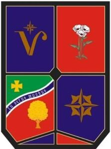

Trade Mark Journal No.2025/043 24 October 2025
WO0000001863446 (15,16,41,42,45)
Office of origin: Russian Federation
Date of International Registration:21 May 2025
Date of designation in the UK:
21 May 2025

The mark contains the colours black, purple, red, green, white, brown, yellow, dark brown, and light green.
- Class 15
- Musical instruments; music stands; stands for musical instruments; conductors' batons.
- Class 16
- Paper; cardboard; printed matter; bookbinding material; photographs [printed]; stationery; office requisites, except furniture; adhesives [glues] for stationery or household purposes; moulds for modelling clays [artists' materials]; artists' watercolour saucers; drawing materials; paintbrushes; painters' brushes ; teaching materials [except apparatus]; plastic film for wrapping; printing type; printing blocks.
- Class 41
- Academies [education]; entertainment services.
- Class 42
- Scientific research and technological research in the field of social sciences and civilizational interactions; industrial design services; quality control services; consultancy in the design and development of computer hardware.
- Class 45
- Legal research; legal advocacy services; legal document preparation services; arbitration services; legal compliance auditing; mediation; legal services in the field of child protection; legal services in the field of immigration; legal services relating to licences; legal services in relation to the negotiation of contracts for others; legal watching services; physical security consultancy; personal bodyguarding; online social networking services.
«Nonprofit organization "The Investment Program Foundation"»
Representative: FRKelly, 4 Mount Charles Belfast BT7 1NZ UNITED KINGDOM